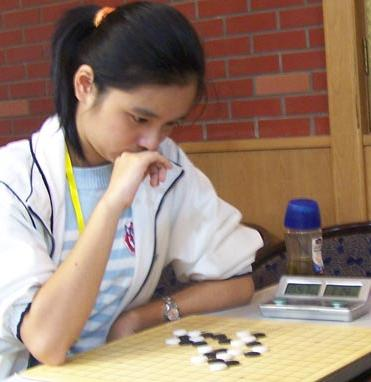

青春是一道最美的风景
#1 青春是一道最美的风景作者：茗弈宽容 发表时间：2010-3-25 10:17:16

女棋手们的睿智与美丽,，在各个棋类项目中都是人们关注的焦点。郑蔚楠三段，一个并不为五子棋迷所熟悉的名字，一个骄小玲珑的上海女孩，在今年全国锦标赛上，一路过关斩将，战胜了本次全锦赛的夺冠大热门，上届全国赛女子少年组冠军张萌森等高手，以5胜1负积5分的好成绩为上海夺得了第一个五子棋的女子全国冠军。 #2 Re:青春是一道最美的风景作者：心上人 发表时间：2010-3-25 14:27:36
郑蔚楠认为这次夺冠运气的成分大一些，尽管之前拿下了本组最强手张萌森，但最后一轮对辽宁的于亚君时，由于比赛经验不足，走了自己不熟悉的应对从而告负，使本来水到渠成的冠军变得扑朔迷离，最后在与北京棋手张萌森大小分相同的情况下，仅以累进分三分的微弱优势夺冠。
郑蔚楠说由于是第一次参加全国赛，并没给自己定下什么目标。她说只是想看看上海以外的实力。问及除上海以外的女棋手她熟悉的有哪些，郑蔚楠说：“都不熟悉，但听说过顾闻一，李非的名字。”
顾闻一、李非是五子棋上几届的全国冠军，我问：“你跟她们在网上有过交流么？”
“没有，所以还只是我认识她们。”郑蔚楠开心地一笑。或许这种轻松无压力的心态是郑蔚楠这次能够取得冠军的原因之一吧。
对于郑蔚楠的夺冠，上海五子棋负责人顾炜坦言略感意外：“小郑的实力在上海女子棋手中应该说是数一数二的，郑蔚楠和顾婉卿（另一位上海女棋手）的棋都是属于那种非常凶悍的类型，顾婉卿的棋比较奔放，有时会收不住，而郑蔚楠的棋则是算度精确，以凌厉攻击著称。郑蔚楠参加的第一个比赛就曾经执黑把陈文夏五段干净利落地砍了，排除陈文夏轻敌的因素外，对于学会五子棋没有多少时间的女孩子来说，能作到这点也很不容易的。”
顾炜说：“郑蔚楠从来没有在上海以外的地区参加过比赛，所以从实战经验上来讲客场作战不是很有利，因此这次没有给她任何压力和指标，只是告诉她按照领队和教练要求，尽量把自己的水平发挥出来。”
郑蔚楠说自己接触五子棋已经有几年了，上海著名棋手薛文曦六段是自己的师傅，问及近几年棋力的突飞猛进，郑蔚楠谈到了上海五子棋的环境：“每周六上海的棋社都有活动，除小棋赛外，还有其它各种比赛，经常有机会和男棋手或高水平的棋手实战，互相切磋交流。大家下棋后有时还会一起去进行‘体能训练’，比如打羽毛球什么的，顾炜老师、葛凌峰老师他们都来，棋社氛围挺好的，像个大家庭一样。”
大部分圈内朋友对郑蔚楠的了解，应该是她在“名人邀请赛”翻译这个角色吧。名人邀请赛在第三届遇到了翻译问题，顾炜了解到郑蔚楠学的就是日文，就逼她上阵。就这样，近几届“名人邀请赛”，郑蔚楠都是作为比赛的日语翻译，穿梭于中日棋手之间。
冈部宽、山口釉水，在中国算是知名度比较高的日本棋手，你跟他们接触有语言上的优势，能不能谈谈你眼中的日本棋手?
“矶部泰山那么大的年纪了，还坚持下棋，这种执着让我敬佩，矶部泰山很和蔼，他说看到中国那么多年轻人越来越喜欢下棋感到很高兴，认为中国棋手最近几年进步比较快。他们对棋有很深的感情，都很专注，对棋的理解大概是超越了胜负那种吧，他们更多的是体会弈棋的过程给他们带来的快乐 。
“山口和我下过盲棋，他不看棋盘但我得看，相当佩服他得记忆能力，竟然盲棋还赢了我一盘 。山口很好玩，在我认真看棋的时候，他会开玩笑，在背后用他的小辫子须须逗人家 。冈部宽是搞笑派，很能活跃气氛。总的来说，日本棋手的风格是一丝不苟，比较务实的那类吧，而中国棋手要恬淡，随性一点了。”
这两种对棋的态度你更欣赏哪一种呢？
“各有千秋 ，感觉两者结合起来最好吧。
郑蔚楠目前就职于上海一家日资企业，她说目前工作繁忙，留给自己业余安排的时间很少，除了音乐之外，她最大的爱好就是下棋了。最近比较喜欢的歌曲是阿桑的《一直很安静》，郑蔚楠最欣赏的人是自己的母亲。
五子棋带给你了什么?
郑蔚楠不假思索地回答：朋友和快乐！
郑蔚楠简介：
2005年起接触现代五子棋，上海第四代棋手。
勤于思考，棋风朴实却不乏灵动，喜欢进攻，尤善在复杂局面下的局部攻杀。大局观和中盘作战能力及对未知局面应变分析的能力尚待加强。
曾多次担任上海名人邀请赛翻译工作。
上海围棋协会五子棋委员会（筹）负责人。
主要战绩：2005年8月，获第四届“新人王战”季军。
2006年8月，获第五届“新人王战”季军；12月，获第三届上海联赛B组第8名。
2007年8月，获第四届上海联赛B组第5名；10月，获2007全国锦